2026.9.26 – 10.7 正向环线 5 人 1 车 摄影优先排程
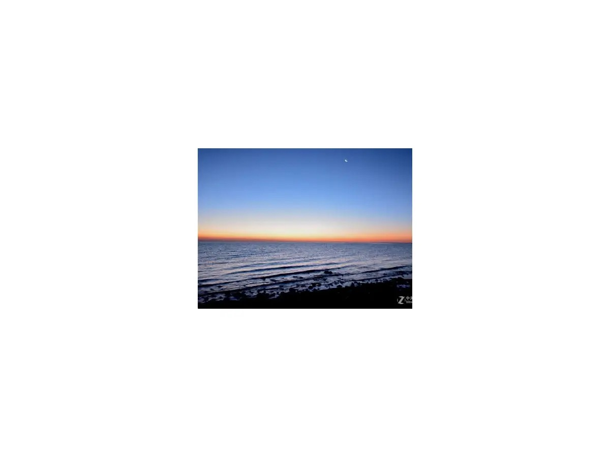
青海湖最佳日出观赏地，湖面与天际线无遮挡。中秋后满月序列期间（9.26–9.28 照度 96–100%），银河不可行，但可规划月出大片。
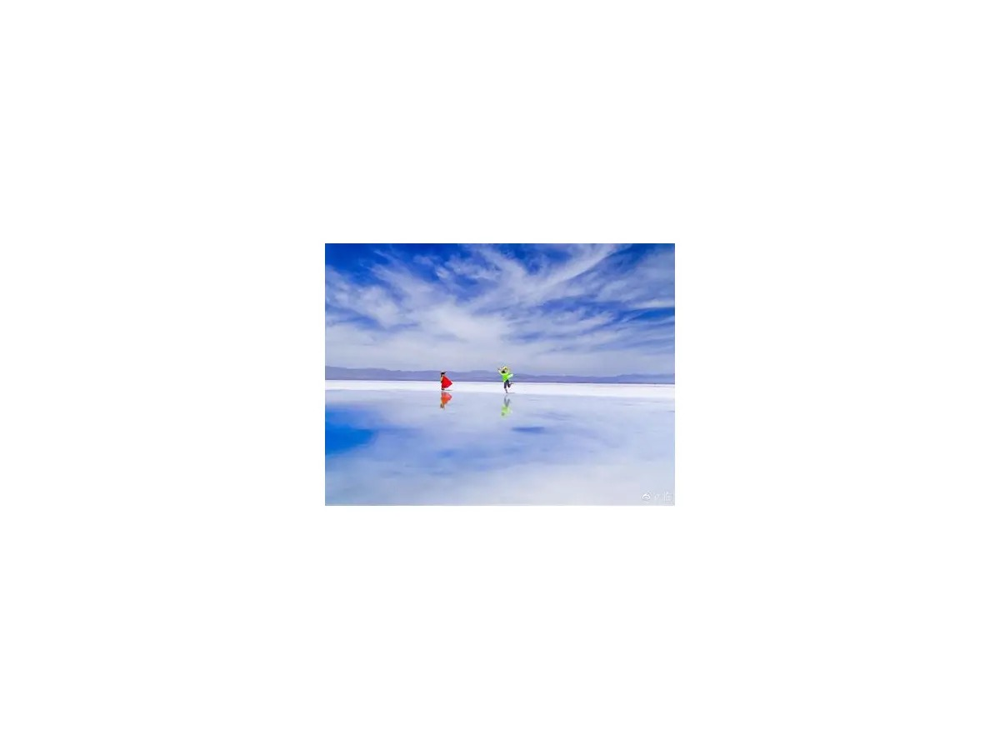
正午前低角度光线才能拍出湖面完整倒影。建议上午 09:00–11:00 入园，避开正午顶光。小火车深入湖心， barefoot 下水需备鞋套。
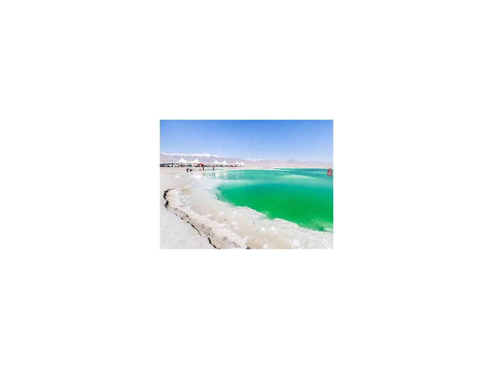
工业盐池遗落的调色盘：碧绿、湛蓝、琥珀色块镶嵌在黑褐色盐壳中。无人机俯拍最佳；日落前 1h 侧光让色块边界更锐。
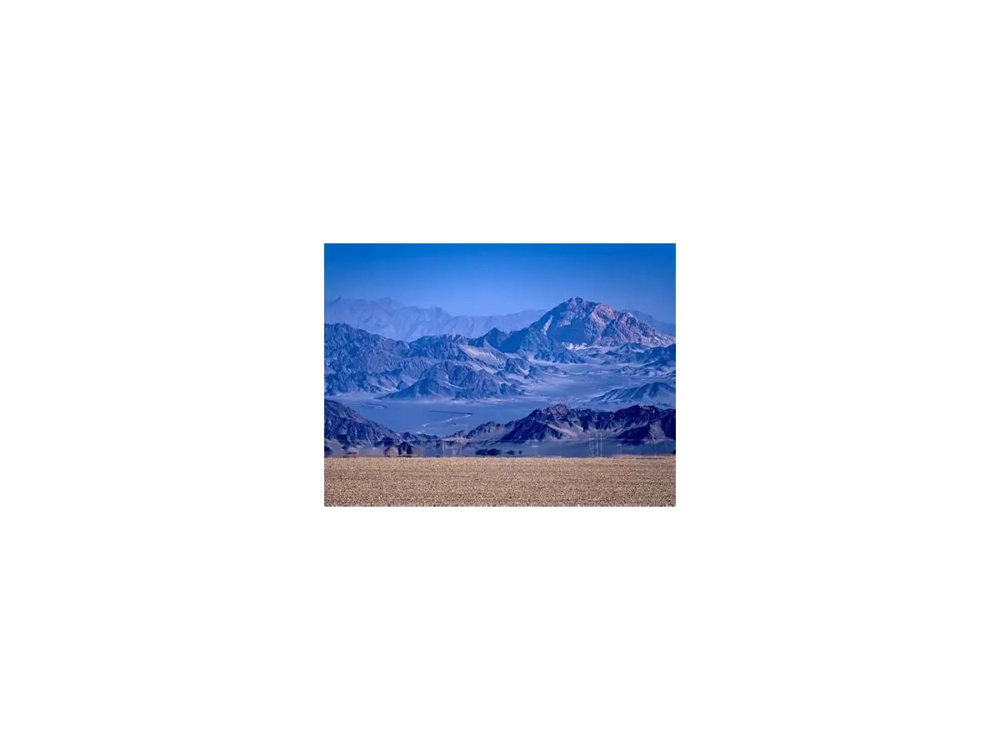
黑戈壁与灰白山脊构成的极简水墨场景。日落前侧光打出山脊层次；9.29 月出约 20:10（照度 90%），可拍「月升黑独山」冷暖对比。
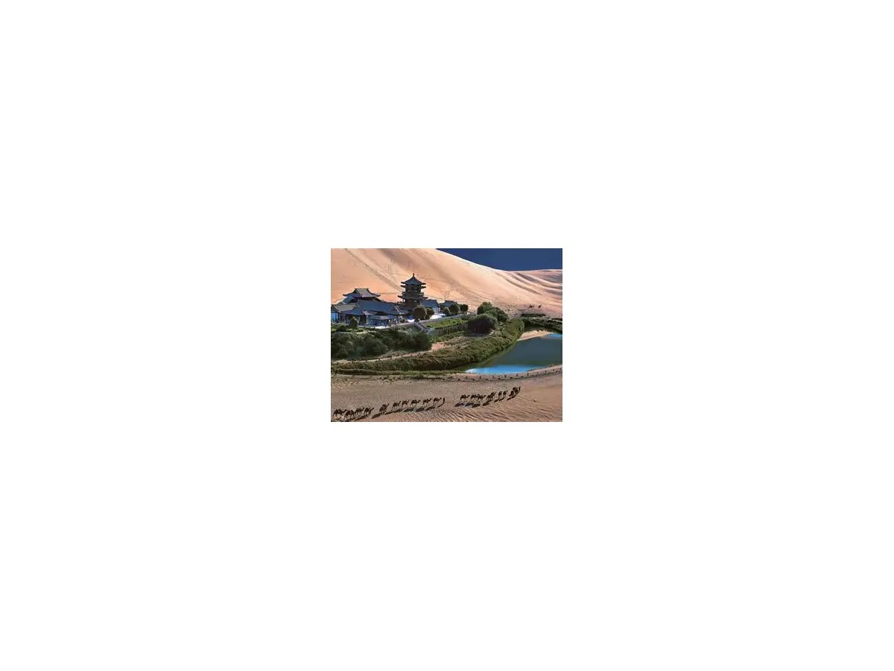
日落前暖光打亮沙丘脊线，蓝调时刻月牙泉亮灯。建议下午 16:00 后进园，先拍驼队剪影，再登沙丘等日落。
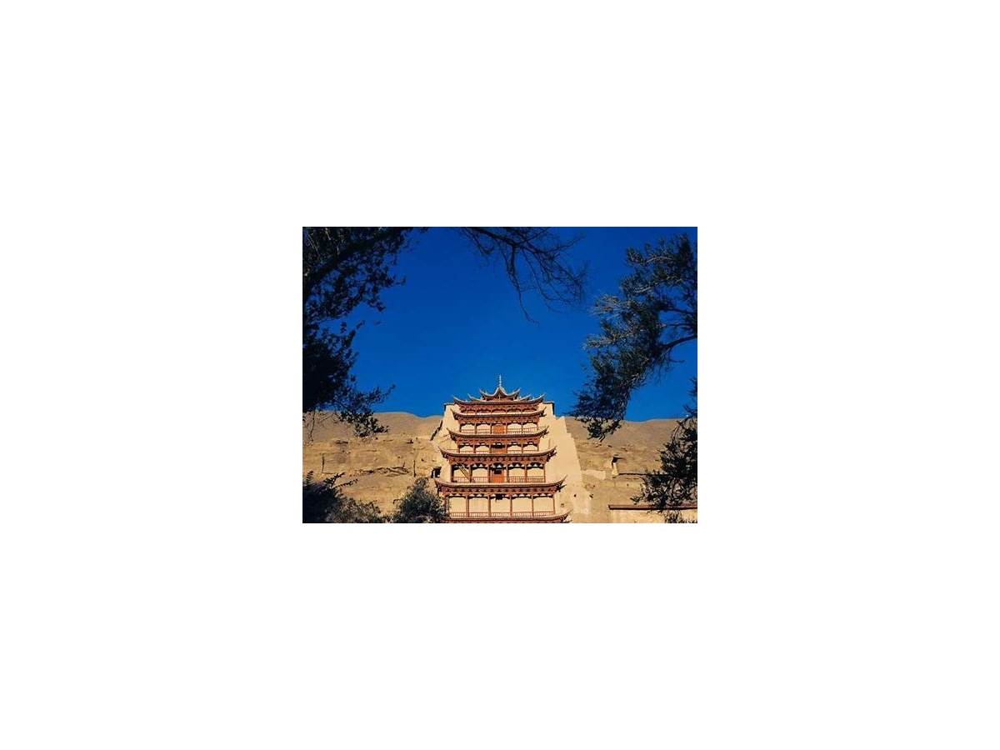
室内洞窟不受日光影响，填平光槽最佳。晨光窗可拍九层楼外景（08:12 日出后 1h 侧光）。A 类票 14:30 下午场，8 个洞窟+两场数字电影。
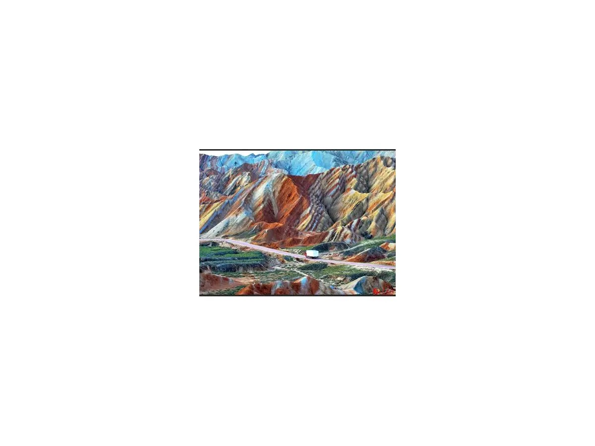
深度游 368 元/人，6:30 最早场次入园。晨光侧光让彩丘纹理最锐，卧虎峡等特级保护区仅在深度游开放。西门服务大厅办理。
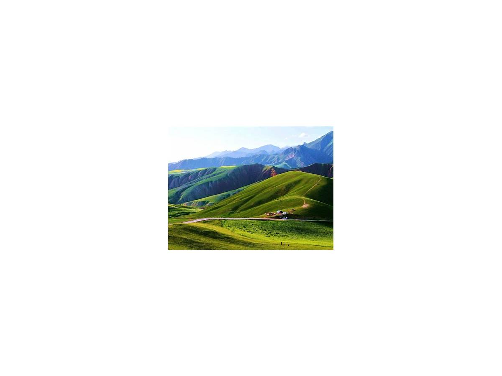
祁连山雪线、丹霞丘陵与草原梯田的层叠。下午至日落前侧光最佳；山顶烽火台可俯瞰牛心山与祁连县城。
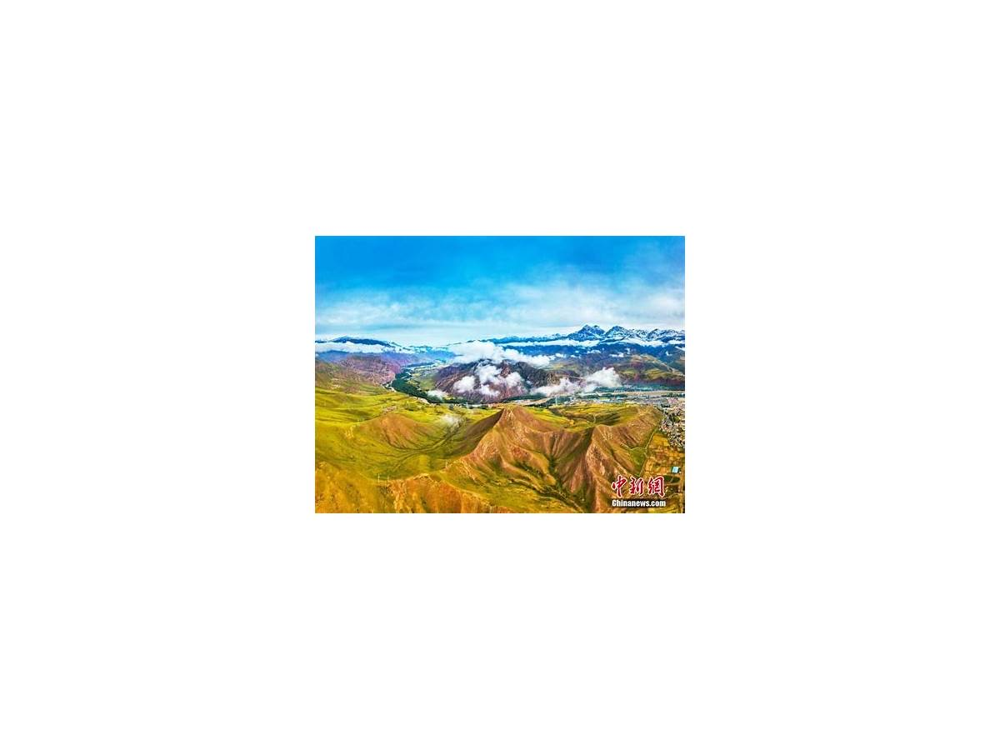
G227 国道翻越达坂山，秋季草原金黄、云杉墨绿、雪山白顶三层色彩。垭口海拔 3792m，注意高反与侧风。
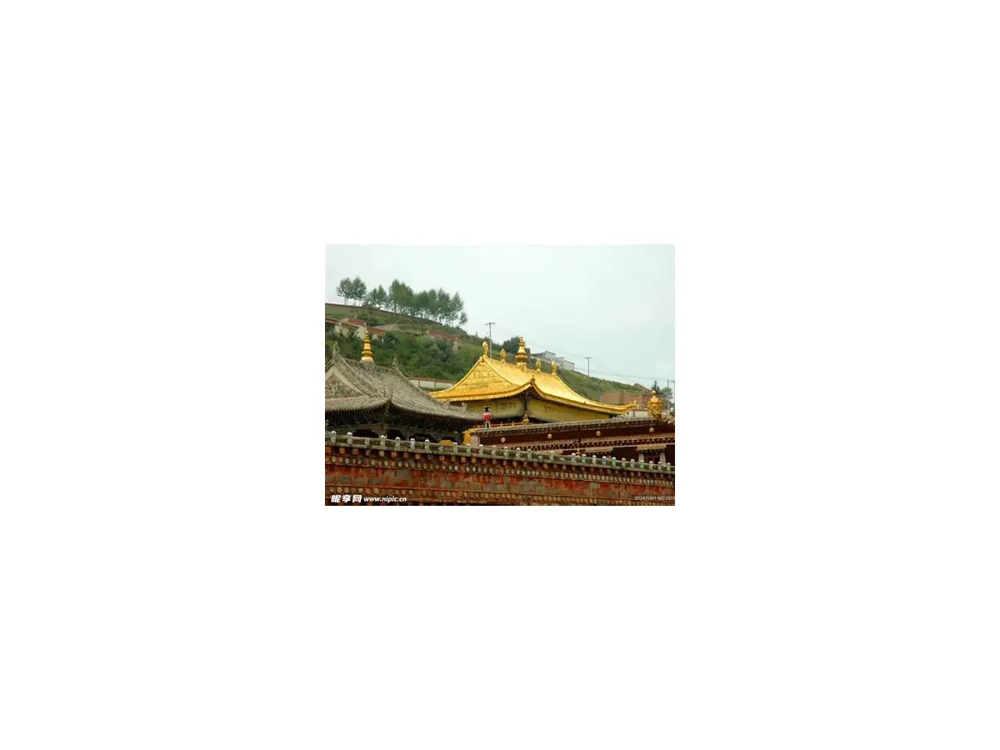
10.5 清晨 08:42 日出后直奔塔尔寺，晨光打在八宝如意塔金顶。殿内酥油花、堆绣不受光线影响，外景晨光不可复制。
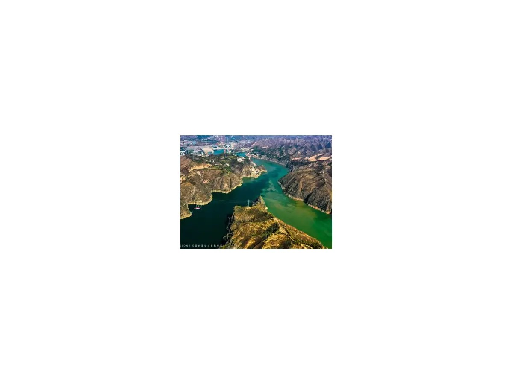
10.4 一早从兰州出发 80km，09:00 前到观景台。黄河清、洮河浊，倒 Y 交汇分界线在侧光下对比最锐。无人机需提前报备。
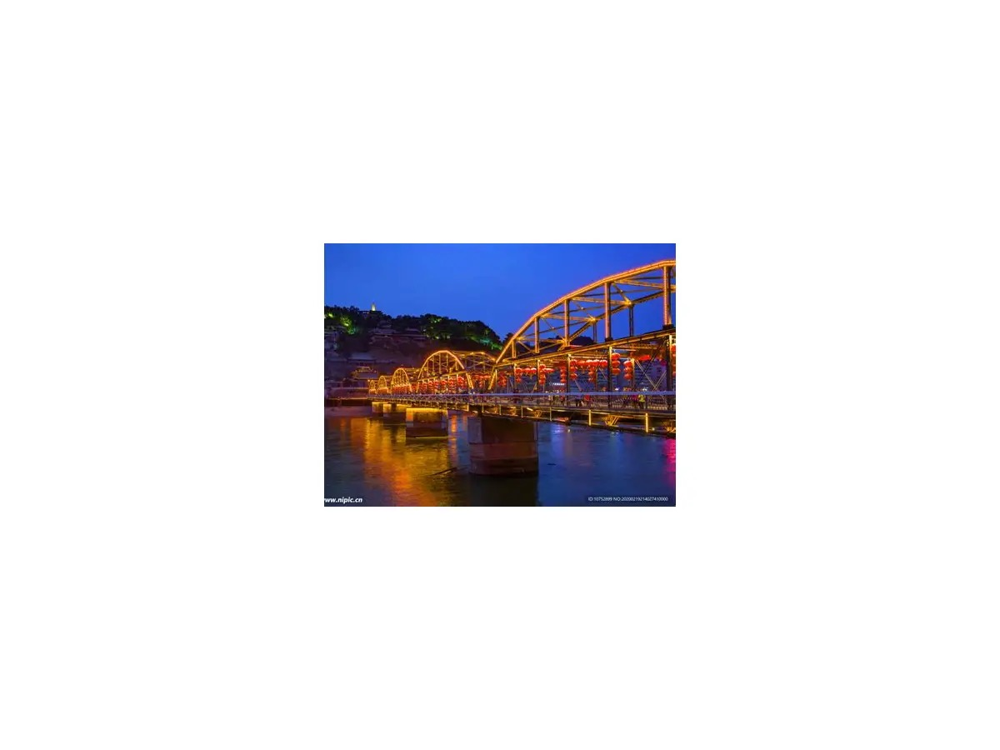
10.3 抵达兰州后夜游中山桥，白塔山俯瞰金城灯火与黄河穿城。牛肉面晚餐 + 正宁路夜市收尾，城市松弛感。